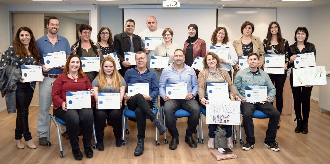

Cohort 1 of the Mandel Program for Regional Leadership in the North marked their graduation in a festive ceremony on March 20, 2018. The highlight of the ceremony was the screening of animated video clips that present the individual projects that the fellows developed as part of the program, and which they will continue to develop and implement now that they have graduated.
Among the projects that were presented were an initiative to establish a center for sustainability and environmental education in Shfaram; a project that will promote and expand the non-profit organization “Spit4Life,” which is dedicated to increasing awareness of bone marrow stem cell transplantation for cancer patients and to expanding Israel's bone marrow registry; a project that will establish an incubator for social initiatives in the North; an initiative dedicated to promoting higher education among Bedouin women; and more.
Mr. Moshe Vigdor, the director general of the Mandel Foundation–Israel, congratulated the new graduates and wished them luck with their endeavors. The staff members of the Mandel Center for Leadership in the North join him in extending best wishes to the graduates for success in the future.
View the animated videos of the individual projects (Hebrew) >>

{kind=link}